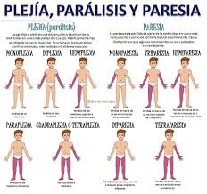
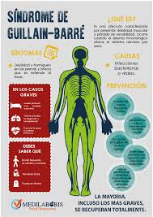

EN QUE CONSISTE
Consiste en problemas en la circulación y
en el cerebro. Este último resulta seriamente
afectado por el corte de aporte sanguíneo,
que se debe al bloqueo o deterioro de una
arteria cerebral
Definición y Mecanismo
Un ataque de apoplejía ocurre cuando se interrumpe o reduce el suministro de
sangre a una parte del cerebro, lo que priva al tejido de oxígeno y nutrientes.
En cuestión de minutos, las células cerebrales comienzan a morir.
Es vital distinguir los dos tipos principales:
Isquémico (80% de los casos): Provocado por un coágulo o placa de grasa que obstruye una arteria cerebral.
Hemorrágico (20% de los casos): Ocurre cuando un vaso sanguíneo se debilita y se rompe, causando sangrado dentro o alrededor del cerebro.
Ataque Isquémico Transitorio (AIT): Conocido como "mini-derrame", donde los síntomas duran poco tiempo y no hay daño permanente, pero es una advertencia crítica de un futuro ACV.
Síntomas clave (Método RÁPIDO)
Rostro caído: Un lado de la cara se entumece o se cuelga al sonreír.
 Alteración del equilibrio: Mareos o pérdida repentina de coordinación.
Parálisis o debilidad: Dificultad para levantar ambos brazos; uno tiende a caer.
Incapacidad para hablar: Habla arrastrada, confusa o imposibilidad de repetir una frase sencilla.
Dolor de cabeza: Inicio súbito y extremadamente intenso sin causa aparente.
Alteración del equilibrio: Mareos o pérdida repentina de coordinación.
Parálisis o debilidad: Dificultad para levantar ambos brazos; uno tiende a caer.
Incapacidad para hablar: Habla arrastrada, confusa o imposibilidad de repetir una frase sencilla.
Dolor de cabeza: Inicio súbito y extremadamente intenso sin causa aparente.

